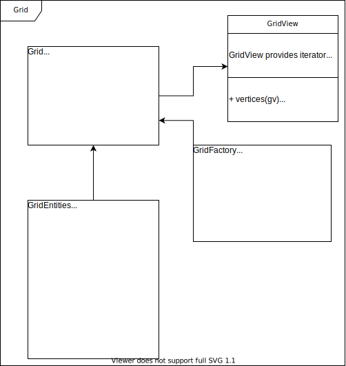

Description of the grid¶
In finite element simulations, we often talk about elements and meshes. What we commonly refer to as "element" consists of various aspects with different tasks, e.g.
- provide a unique identifier (element number)
- provide a description of the reference geometry (element shape in physical space, shape functions, etc.)
- provide quantities with physical meaning (mass matrix, stiffness matrix, internal force vector, etc.)
- ...
In the code, there is not one single class which performs all these tasks. Different tasks are performed by different classes, which are described in the following. Especially, the description of the geometry is decoupled from the task to provide physical meaning. The following content is only about the description of the element geometry. Details on the implementation of physical quantities can be found here.
This page explains the relationship and the ideas behind everything that has to do with the grid. The relationship is visualized in the following diagram:

On this page, we will go through it using the following example:

Grid¶
The grid is a collection of grid entities. In the example above, the grid consists of three surfaces, ten edges and eight vertices, i.e. it consists of 21 grid entities. Since it is some work to construct all these quantities and their relations, there is the grid factory which does this job.
Interface of the grid¶
leafGridView(): returns a grid view, i.e. an object which can iterate over the grid.
Available grid implementations¶
SimpleGrid: Currently the only available grid implementation. To construct it, use SimpleGridFactory,
as a grid view use SimpleGridView.
It has the following capabilities:
- It is a template:
SimpleGrid<dim,wdim>wheredimis the dimension of the grid entities andwdimis the dimension of the world. Dimension of grid entity in this case means:- dim=1: e.g. truss elements, beams (one element-internal coordinate xi exists)
- dim=2: e.g. plate elements (two element-internal coordinates xi and eta exist)
- dim=3: 3d elements
- All meaningful combinations up to three dimensions can be instantiated, e.g. truss elements (dim=1) in 2d (wdim=2)
- Different types of grid entities are supported in the same grid as long as they have the
dimension specified by
dim(for details on these types see TODO):- dim=1: linearLine
- dim=2: linearTriangle, linearQuadrilateral
- dim=3: linearTetrahedron, pyramid, prism, linearHexahedron
Some restrictions apply:
- You can't insert grid entities of different dimensions into the same
SimpleGrid - Other types than the ones mentioned above are not supported
- The world dimension is limited to 3.
Grid entity¶
A grid entity provides all information related to the element geometry.
Interface of grid entity¶
A grid entity has the following properties:
geometry(): returns the geometrical realization, i.e. an object that satisfies the geometry interface. Further details about this interface and what the returned object is able to do can be found on the geometry theory page.type(): returns the geometrical type, e.g. it can be a vertex, a linear line defined by two point or a quadrilateral with linear edges. The difference betweentype()andgeometry()is thattype()only returns a name whereasgeometry()returns an object with functionality.vertices(gridEntity),edges(gridEntity),surfaces(gridEntity)andvolumes(gridEntity): Each entity has sub-entities of lower dimension. In the example above, surface S1 has the following sub-entities: four edges (number 1,2,4,6) and four vertices (number 1,2,4,5).vertices(S1)returns a span of vertices. The other functions work similarly.entities(gridEntity, dimension)does the same as the functions above, i.e.entities(gridEntity, 0)does the same asvertices(gridEntity).entities(gridEntity, 1)does the same asedges(gridEntity).- ...
subEntities(codimension)returns the number of subentities. Codimension in this case is the dimension of the grid entity minus the dimension of the requested subentity. Example: The grid entity is a 3d volume. subEntities(1) returns the number of surfaces of this volume because codimension=1 means your query is about the subentities one dimension lower than the object itself.getID(): returns a unique identifier
Implementation of grid entity¶
There is currently one implementation of the GridEntity interface available, which is DefaultGridEntity. It is
supposed to be used together with the grid implementation SimpleGrid.
template <int griddim, int cogriddim, int wdim>
class DefaultGridEntity {
// ...
};
griddim(dimension of the grid), cogriddim(???) and
wdim(dimension of the world).
Grid factory¶
To construct a grid, a grid factory can be used. To construct a grid, vertices and element
definitions are inserted into the factory. The grid is then constructed by the createGrid() function.
Interface of the grid factory¶
insertVertex(Eigen::Vector<double, dimensionworld>): Vertices are inserted as a Eigen::Vector of double. Its size is equal to the dimensions of the world (e.g. 2 if it is a 2d simulation etc.)insertElement(Ikarus::GeometryType type, std::span<size_t> vertices): An element is defined by its geometrical type and the vertex numbers. For the ordering of the node numbers, see ToDo
Implementation of grid factory¶
SimpleGridFactory: Constructs a SimpleGrid. The same restrictions apply as stated above for SimpleGrid.
Grid view¶
Interface of grid view¶
The interface of a grid view consists of four free functions. Each of them provides a span of certain grid objects:
vertices(GridView): returns a span of all vertices in this gridedges(GridView): returns a span of all edges in this gridsurfaces(GridView): returns a span of all surfaces in this gridvolumes(GridView): returns a span of all volumes in this grid
Implementation of grid view¶
SimpleGridView: Provides iterators for SimpleGrid.